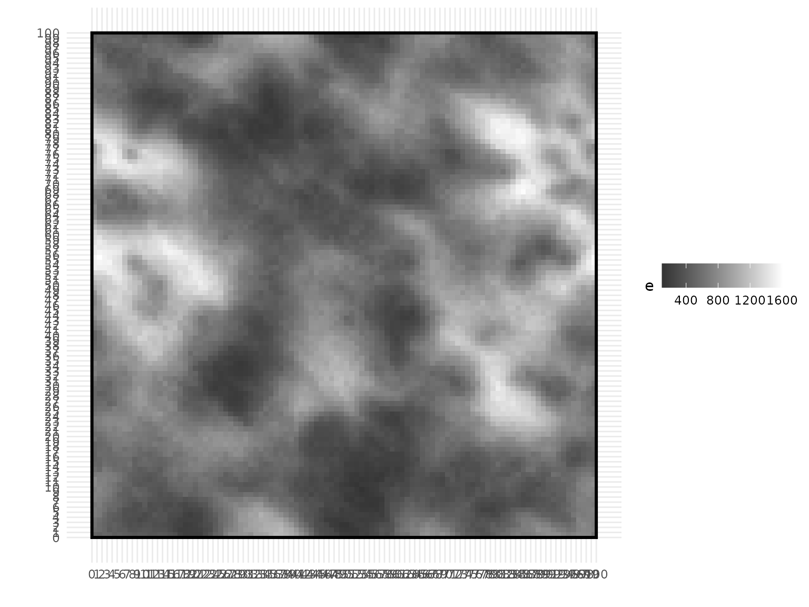

1 - A first simple case
Compute tree light interception by symmetric crowns in an axis-aligned rectangle plot
1-simple_case.RmdThis is a first tutorial which shows you how to solve a basic problem
with the SamsaRaLight package. We will exemplify this simple case with
the Prenovel dataset stored in the package as
SamsaRaLight::data_prenovel. It is an uneven-aged stand of
fir-spruce-beech located in the Jura mountains (France). Get more
information in the data documentation.
Inputs
Virtual stand geometry
SamsaRaLight needs to be run on a axis-aligned rectangle stand that is split into square identical cells. This rectangle stand can have a given homogeneous slope with a given orientation and aspect. Finally, as the radiation depends on the plot location, the user needs to precise the latitude/longitude coordinates of the stand. If the virtual stand is not represented as a axis-aligned rectangle, the user can also refer to the Tutorial 4 (4 - Create a virtual stand from tree inventory).
# Information of the plot are given here
infos <- SamsaRaLight::data_prenovel$info
infos
#> latitude longitude size_x size_y slope
#> 46.52666 5.82765 100.00000 100.00000 6.00000
#> aspect north_to_x_cw
#> 144.00000 54.00000
# Coordinates of the stand (for monthly radiation and rays geometry)
latitude <- infos[["latitude"]] # The latitude of the stand (Y-coord in WGS85)
longitude <- infos[["longitude"]] # The longitude of the plot (X-coord in WGS85)
# The slope of the stand
slope <- infos[["slope"]]
# Angle of slope bottom on the compass from the North, clockwise rotation (in degrees)
# northern aspect : 0, eastern aspect : 90, southern aspect : 180, western aspect : 270
aspect <- infos[["aspect"]]
# Angle from North to x axis clockwise. (in degrees)
# Default correspond to a Y axis oriented toward the North.
north_to_x_cw <- infos[["north_to_x_cw"]]
# Considering a squared plot, number and size of the cells composing the grid
cell_size <- 1 # Size of the length of a cell
n_cells_x <- infos[["size_x"]] / cell_size # Number of cells columns
n_cells_y <- infos[["size_y"]] / cell_size # Number of cells rowsTrees description
The user needs to define the trees composing the stand with their crown dimensions. The data frame must be created with a specific format and variables: see documentation using ?SamsaRaLight::sl_run to understand the composition of the trees dataset.
The dataframe must contain mandatory information about the trees: a unique integer id (id_tree), the species name (species), coordinates (x, y) and diameter at breast height in cm (dbh_cm). The x and y coordinates must be given relatively to the rectangle plot as defined above (thus and ) and are given on a flat plane, not considering slope. The z coordinate is computed automatically during the process.
In this tutorial, we represent the tree crowns with simple shapes, defined in the crown_type column by a specific code: “E” (for an ellipsoid) or “P” (for a paraboloid). The ellipsoidal shape “E” is commonly used for broadleaved species, whereas a paraboloidal shape “P” is commonly used for conifers. When using simple crown shapes, the user must provide only 3 values to define the crown dimensions: the height of the tree (h_m in meters), the height of the crown base (hbase_m in meters) and the crown maximum radius that is the same is the four cardinal directions as we wonsider simple symetric crowns (rn_m, re_m, rs_m and rw_m, all in meters). When considering those type of simple crown shapes (“E” or “P”), the user must not provide the hmax_m variable, which is the height at which the crown radius is maximum. Indeed, it is automatically computed during the process, being set to the crown base height () when considering a paraboloidal shape “P”, and set at the middle of the crown for an ellipsoidal shape “E” ().
In the next tutorials, we will explain more in details the columns crown_openess/crown_lad (3 - Consider crowns as either a porous envelop or a turbid medium) and consider more complex asymetric crown shapes (5 - Represent the crowns with more complex shapes).
data_trees <- SamsaRaLight::data_prenovel$trees
head(data_trees)
#> id_tree species x y dbh_cm crown_type h_m hbase_m hmax_m
#> 1 1 Abies alba 77.7336 71.0808 22.9320 P 14.8120 3.3073 NA
#> 2 2 Abies alba 62.5783 65.1864 18.2397 P 12.9612 4.7429 NA
#> 3 3 Abies alba 84.0060 95.2483 22.8472 P 15.8187 4.9055 NA
#> 4 4 Abies alba 58.9521 97.9011 19.1539 P 11.7033 4.2050 NA
#> 5 5 Abies alba 33.3423 39.4053 19.8852 P 14.6597 3.8346 NA
#> 6 6 Abies alba 57.5743 2.0656 20.1293 P 16.6530 7.6860 NA
#> rn_m re_m rs_m rw_m crown_openess crown_lad
#> 1 3.0204 3.0204 3.0204 3.0204 0.2 0.767
#> 2 3.0896 3.0896 3.0896 3.0896 0.2 0.767
#> 3 2.8350 2.8350 2.8350 2.8350 0.2 0.767
#> 4 2.5196 2.5196 2.5196 2.5196 0.2 0.767
#> 5 2.8208 2.8208 2.8208 2.8208 0.2 0.767
#> 6 3.2436 3.2436 3.2436 3.2436 0.2 0.767Monthly radiations
The user needs to define in a data frame the monthly energy specific to its plot location. For each month (represented by an integer number between 1 and 12), one needs to inform as the global monthly energies (in ), and as the ratio of diffuse energy relative to global energy (needed to represent the proportion of diffuse and direct energy).
This data frame can be automatically constructed using the
SamsaRaLight function SamsaRaLight::get_monthly_rad(),
given the latitude and longitude of the plot. It gets radiation data
from the PVGIS European database (needs an Internet connection).
Otherwise, the monthly radiation data frame used in this tutorial
(Prenovel stand) is stored within the package and can be retrieved using
SamsaRaLight::data_prenovel$radiations.
# Create the monthly radiation data frame
data_monthly_rad <- SamsaRaLight::get_monthly_rad(latitude, longitude)
data_monthly_rad
#> month Hrad DGratio
#> 1 1 137.0902 0.580625
#> 2 2 206.3025 0.506875
#> 3 3 353.8260 0.493125
#> 4 4 465.8220 0.490000
#> 5 5 535.2458 0.508750
#> 6 6 618.1785 0.463750
#> 7 7 655.1730 0.425000
#> 8 8 557.6332 0.436250
#> 9 9 423.9382 0.446875
#> 10 10 280.2780 0.475000
#> 11 11 157.9635 0.538750
#> 12 12 116.4960 0.587500Run SamsaRaLight
Now, given the stand geometry, the trees dataset and the monthly
radiation, you can easily run the SamsaraLight ray-tracing model using
the function sl_run(). Note that the computation time
increase exponentially with the cell size decreasing.
The other function arguments are addressed throughout the next tutorials, and especially at the last one (8 - Deeper understanding of the SamsaraLight parameters).
sl_output <- SamsaRaLight::sl_run(
# Trees
trees = data_trees,
# Radiations
monthly_rad = data_monthly_rad,
latitude = latitude,
# Stand geometry
slope = slope,
aspect = aspect,
north_to_x_cw = north_to_x_cw,
cell_size = cell_size,
n_cells_x = n_cells_x,
n_cells_y = n_cells_y
)Outputs
Plot the virtual stand
The user can first observe its virtual stand using the function
plot_sl_output() directly on the output object.
plot_sl_output(sl_output)Output format
The output is a complex R object, with first a list of three
elements: $input (that gathers inputs of the model defined
above), $monthly_rays containing the rays that are cast
toward each cell and $output (containing the output of the
SamsaraLight ray-tracing model).
Here, we will focus on the outputs of the model for the cells
$output$cells and the trees $output$trees. The
output for the sensors $output$sensors are explained in the
Tutorial 7 (7 - Estimate light on virtual sensors) and the
$monthly_rays are addressed in the next tutorial (2 -
Importance of stand latitude, slope and orientation).
str(sl_output)
#> List of 3
#> $ input :List of 3
#> ..$ trees :'data.frame': 333 obs. of 15 variables:
#> .. ..$ id_tree : int [1:333] 1 2 3 4 5 6 7 8 9 10 ...
#> .. ..$ species : chr [1:333] "Abies alba" "Abies alba" "Abies alba" "Abies alba" ...
#> .. ..$ x : num [1:333] 77.7 62.6 84 59 33.3 ...
#> .. ..$ y : num [1:333] 71.1 65.2 95.2 97.9 39.4 ...
#> .. ..$ dbh_cm : num [1:333] 22.9 18.2 22.8 19.2 19.9 ...
#> .. ..$ crown_type : chr [1:333] "P" "P" "P" "P" ...
#> .. ..$ h_m : num [1:333] 14.8 13 15.8 11.7 14.7 ...
#> .. ..$ hbase_m : num [1:333] 3.31 4.74 4.91 4.21 3.83 ...
#> .. ..$ hmax_m : logi [1:333] NA NA NA NA NA NA ...
#> .. ..$ rn_m : num [1:333] 3.02 3.09 2.83 2.52 2.82 ...
#> .. ..$ re_m : num [1:333] 3.02 3.09 2.83 2.52 2.82 ...
#> .. ..$ rs_m : num [1:333] 3.02 3.09 2.83 2.52 2.82 ...
#> .. ..$ rw_m : num [1:333] 3.02 3.09 2.83 2.52 2.82 ...
#> .. ..$ crown_openess: num [1:333] 0.2 0.2 0.2 0.2 0.2 0.2 0.2 0.2 0.2 0.2 ...
#> .. ..$ crown_lad : num [1:333] 0.767 0.767 0.767 0.767 0.767 0.767 0.767 0.767 0.767 0.767 ...
#> ..$ monthly_rad:'data.frame': 12 obs. of 3 variables:
#> .. ..$ month : int [1:12] 1 2 3 4 5 6 7 8 9 10 ...
#> .. ..$ Hrad : num [1:12] 137 206 354 466 535 ...
#> .. ..$ DGratio: num [1:12] 0.581 0.507 0.493 0.49 0.509 ...
#> ..$ info :List of 17
#> .. ..$ latitude : num 46.5
#> .. ..$ start_day : num 1
#> .. ..$ end_day : num 365
#> .. ..$ slope : num 6
#> .. ..$ north_to_x_cw : num 54
#> .. ..$ aspect : num 144
#> .. ..$ cell_size : num 1
#> .. ..$ n_cells_x : num 100
#> .. ..$ n_cells_y : num 100
#> .. ..$ soc : logi TRUE
#> .. ..$ height_anglemin : num 10
#> .. ..$ direct_startoffset: num 0
#> .. ..$ direct_anglestep : num 5
#> .. ..$ diffuse_anglestep : num 15
#> .. ..$ use_torus : logi TRUE
#> .. ..$ turbid_medium : logi TRUE
#> .. ..$ trunk_interception: logi TRUE
#> $ monthly_rays:List of 2
#> ..$ energies: Named num [1:4] 2440 2095 2289 2061
#> .. ..- attr(*, "names")= chr [1:4] "slope_direct" "slope_diffuse" "horizontal_direct" "horizontal_diffuse"
#> ..$ rays :'data.frame': 491 obs. of 5 variables:
#> .. ..$ id_ray : int [1:491] 1 2 3 4 5 6 7 8 9 10 ...
#> .. ..$ azimut : num [1:491] 4.96 4.9 4.82 4.75 4.67 ...
#> .. ..$ height_angle: num [1:491] 0.111 0.156 0.198 0.237 0.273 ...
#> .. ..$ e_incident : num [1:491] 8.62 8.62 8.62 8.62 8.62 ...
#> .. ..$ direct : logi [1:491] TRUE TRUE TRUE TRUE TRUE TRUE ...
#> $ output :List of 3
#> ..$ sensors:'data.frame': 0 obs. of 7 variables:
#> .. ..$ id_sensor: int(0)
#> .. ..$ x : num(0)
#> .. ..$ y : num(0)
#> .. ..$ z : num(0)
#> .. ..$ e : num(0)
#> .. ..$ pacl : num(0)
#> .. ..$ punobs : num(0)
#> ..$ trees :'data.frame': 333 obs. of 8 variables:
#> .. ..$ id_tree: int [1:333] 116 92 46 273 176 4 272 157 89 29 ...
#> .. ..$ x : num [1:333] 13.4 43.1 72.8 93.7 44.9 ...
#> .. ..$ y : num [1:333] 99.2 98 98 98.1 97.3 ...
#> .. ..$ z : num [1:333] 10.4 10.3 10.3 10.3 10.2 ...
#> .. ..$ epot : num [1:333] 387315 253854 203115 76454 221087 ...
#> .. ..$ e : num [1:333] 115800 96237 56294 15399 9713 ...
#> .. ..$ lci : num [1:333] 0.606 0.686 0.672 0.803 0.959 ...
#> .. ..$ eunobs : num [1:333] 83985 81000 45459 10109 1318 ...
#> ..$ cells :'data.frame': 10000 obs. of 7 variables:
#> .. ..$ id_cell : int [1:10000] 1 2 3 4 5 6 7 8 9 10 ...
#> .. ..$ x_center: num [1:10000] 0.5 1.5 2.5 3.5 4.5 5.5 6.5 7.5 8.5 9.5 ...
#> .. ..$ y_center: num [1:10000] 99.5 99.5 99.5 99.5 99.5 99.5 99.5 99.5 99.5 99.5 ...
#> .. ..$ z_center: num [1:10000] 10.5 10.5 10.5 10.5 10.5 ...
#> .. ..$ e : num [1:10000] 480 534 524 508 490 ...
#> .. ..$ pacl : num [1:10000] 0.105 0.117 0.115 0.111 0.107 ...
#> .. ..$ punobs : num [1:10000] 0.308 0.377 0.473 0.406 0.329 ...Understand the output cells and trees SamsaraLight variables
Output cell
The object $output$cells contains output light variables
for each cell, identified by its unique id (id_cell) and the coordinates
of the cell center (x_center, y_center, z_center). There are 3 output
variables, which are e (for the energy arriving on the cell
in MJ), pacl (for proportion of above light canopy, which
is the ratio between the energy arriving on the cell and the energy
before interception by the trees) and punobs (for the
proportion of energy on the cell that comes from unobstructed rays,
i.e. rays that have not been intercepted by any trees).
head(sl_output$output$cells)
#> id_cell x_center y_center z_center e pacl punobs
#> 1 1 0.5 99.5 10.45787 480.1922 0.1053010 0.3077038
#> 2 2 1.5 99.5 10.45787 534.4402 0.1171970 0.3767941
#> 3 3 2.5 99.5 10.45787 524.3878 0.1149927 0.4734174
#> 4 4 3.5 99.5 10.45787 507.7187 0.1113373 0.4059686
#> 5 5 4.5 99.5 10.45787 490.2187 0.1074998 0.3291288
#> 6 6 5.5 99.5 10.45787 486.8014 0.1067504 0.2460796The user can plot a given output variable (e.g. cells.fill = “e” or cells.fill = “pacl) without the trees above (trees.fill = NULL) to observe the light distribution within the stand (absolute or relative to the above light). Aesthetic arguments can be tweaked, such as the cell borders (cell.borders = FALSE) or the palette used for filling the cells (e.g. cells.fill.palette =”light” or cells.fill.palette = “light01” for forcing the limits of the palette between 0 and 1).
plot_sl_output(sl_output,
trees.fill = NULL,
cells.fill = "e",
cells.fill.palette = "light",
cells.border = FALSE)
plot_sl_output(sl_output,
trees.fill = NULL,
cells.fill = "pacl",
cells.fill.palette = "light01",
cells.border = FALSE)Output tree
The object $output$trees contains output light variables
for each trees, identified by its unique id (id_trees) and their
coordinates (x, y, z). There are 4 output variables, which are
e (for the total energy intercepted by the tree in MJ),
epot (for the potential energy intercepted by the tree
without considering its neighbors in MJ, i.e. the total energy
intercepted if the tree was alone with the same crown dimensions),
(which is a light competition index, representing the real intercepted
energy compared to the potential energy it could intercept without
competition, see Beauchamp et al. 2025) and punobs (for the
proportion of energy intercepted by the tree that comes from
unobstructed rays, i.e. rays that have not been intercepted by any other
trees).
head(sl_output$output$trees)
#> id_tree x y z epot e lci eunobs
#> 1 116 13.4212 99.1656 10.42272 387315.14 115800.300 0.6064701 83985.216
#> 2 92 43.1255 98.0173 10.30203 253854.10 96236.706 0.6855485 81000.256
#> 3 46 72.7660 98.0420 10.30463 203115.21 56293.576 0.6715528 45459.168
#> 4 273 93.6610 98.0882 10.30949 76453.85 15399.010 0.8029645 10108.939
#> 5 176 44.9346 97.3227 10.22903 221086.99 9713.166 0.9587289 1318.271
#> 6 4 58.9521 97.9011 10.28982 103895.59 18328.933 0.7483866 14097.755The user can plot a given output variable (e.g. trees.fill = “e” or trees.fill = “lci”) without the cells filled (cells.fill = NULL) to observe the light interception by trees (absolute or scaled to represent competition). Aesthetic arguments can be tweaked, such as inversing the palette colors (trees.fill.inverse = TRUE, better to represent the competition with viridis, where a lci = 1 indicates a trees with a very strong light competition).
plot_sl_output(sl_output,
trees.fill = "e",
cells.fill = NULL)
plot_sl_output(sl_output,
trees.fill = "lci",
trees.fill.inverse = TRUE,
cells.fill = NULL)Gather all the SamsaraLight outputs
Here, the user can decide to plot the light output for both trees and cells, and even adding the species the tree is associated to (trees.border.species = TRUE).
plot_sl_output(sl_output,
trees.border.species = TRUE,
trees.fill = "lci",
trees.fill.inverse = TRUE,
cells.fill = "pacl",
cells.fill.palette = "light01",
cells.border = FALSE)